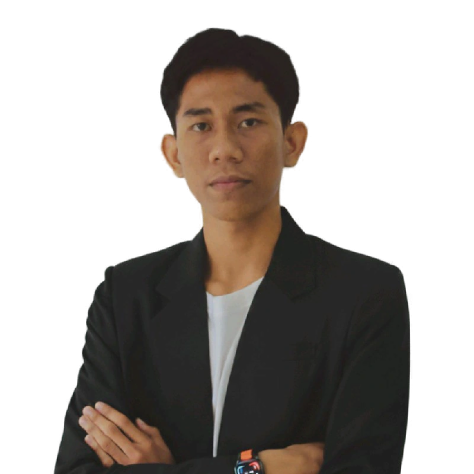

Software Engineering & Techno Enthusiast • Penerima Beasiswa BPDPKS
Mahasiswa Sarjana Terapan (D4) Teknologi Rekayasa Perangkat Lunak di Politeknik Kelapa Sawit Citra Widya Edukasi (penerima beasiswa penuh BPDPKS) dengan latar belakang pendidikan vokasi Teknik Komputer dan Jaringan (TKJ). Berpengalaman memimpin tim sebagai Co-Founder & Project Manager di cgreen student software house, mengelola proyek rekayasa perangkat lunak berskala industri sawit (MillTrack, MyStation365, MySAP365), serta merancang instrumen IoT perkebunan terapan (GeoGiSa, Sterilizer Hub). Memiliki kepemimpinan kuat sebagai Ketua Himpunan Mahasiswa TRPL dan Ketua UKM Bengkel Seni.
Penerima Beasiswa Penuh Badan Pengelola Dana Perkebunan Kelapa Sawit (BPDPKS). Aktif dalam riset teknologi terapan kelapa sawit dan kepengurusan himpunan mahasiswa.
Fokus pada administrasi jaringan komputer, hardware troubleshooting, dan sistem operasi.
Memimpin tim engineering dalam pengembangan produk sistem MillTrack untuk pemantauan absensi dan kinerja operator stasiun pabrik kelapa sawit secara real-time. Bertanggung jawab atas sprint management, arsitektur data, dan koordinasi dengan stakeholder.
Melaksanakan praktik kerja industri komprehensif selama 5 bulan di perkebunan dan pabrik kelapa sawit, menganalisis alur proses pengolahan, pemeliharaan instrumen, dan kebutuhan digitalisasi operasional.
Praktik lapangan operasional perkebunan kelapa sawit, memahami alur kerja agronomis dan administrasi logistik kebun.
Perbaikan hardware komputer, laptop, dan printer; instalasi sistem operasi, setup jaringan LAN, serta pelayanan konsultasi teknis kepada pelanggan.
Layanan mandiri perbaikan perangkat elektronik, komputer, dan gadget dengan transparansi teknis dan jaminan garansi.
Memimpin organisasi mahasiswa tingkat prodi, menyelenggarakan program pengembangan skill coding, serta bertindak sebagai perwakilan resmi yang mendaftarkan Himpunan TRPL ke Perhimpunan Mahasiswa Informatika dan Komputer Nasional (PERMIKOMNAS).
Mengordinasikan kegiatan kesenian, pertunjukan budaya, dan kolaborasi kreatif mahasiswa kampus.
Membimbing pembuatan inovasi produk IoT yang memanfaatkan energi hasil fermentasi limbah padi organik untuk penerangan kandang ternak pedesaan.
Merancang inovasi riset teknologi terapan untuk efisiensi industri kelapa sawit nasional.
Sistem tracking absensi digital dan performa operator tiap stasiun pabrik kelapa sawit secara real-time.
Perangkat IoT pemantau kadar hara/nutrisi tanah sawit terintegrasi peta spasial mobile.
Sistem telemetri pemantau suhu, tekanan uap, dan durasi perebusan TBS di stasiun sterilizer PKS.
Platform penelusuran indekos dan hunian mahasiswa berbasis radius spasial akurat.
Implementasi sistem ERP terintegrasi untuk alur logistik, inventori, dan operasional industri sawit.
Sistem pemantauan stasiun PKS lanjutan yang tersinkronisasi otomatis ke ERP MySAP365.
Simulasi alur enterprise manufacturing, procurement, dan sales pada entitas kosmetik Amourtic.
Platform perpustakaan digital terintegrasi sistem modul pelatihan dan kuis evaluasi otomatis.
ESP32, ESP8266, Arduino, NPK Soil Sensor, Sensor Telemetry, MQTT, Hardware Interfacing.
JavaScript (ES6+), TypeScript, React, Next.js, Node.js, Python, Java, HTML5, CSS3/Tailwind.
Openbravo ERP, MySAP365, WebGIS, Leaflet.js, Spatial Analysis, PostgreSQL, MySQL.
Figma (UI/UX), Git/GitHub, Linux/Ubuntu Server, VS Code, Hardware & PC Troubleshooting.